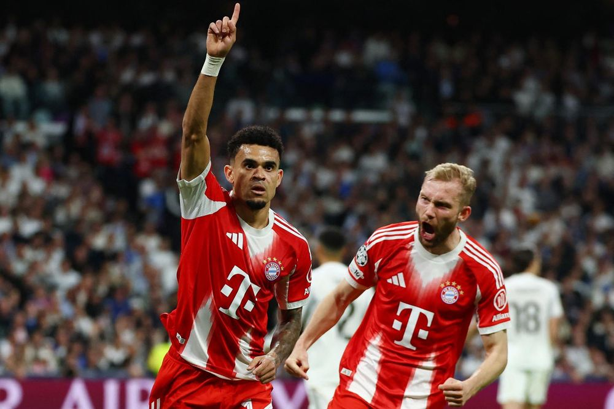
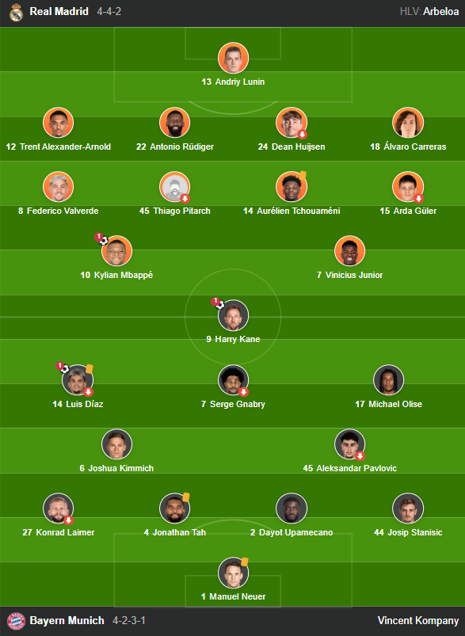

Kết quả Cúp C1 châu Âu hôm nay 8/4: Bayern đánh bại Real Madrid
Vòng tứ kết Cúp C1 châu Âu (UEFA Champions League) bắt đầu từ sáng nay 8/4 với lợi thế thuộc về các đội khách. Trên sân Bernabeu (Madrid, Tây Ban Nha), Real Madrid thất bại 1-2 trước Bayern Munich.

kết quả tứ kết lượt đi Cúp C1 châu Âu hôm nay 8/4: Bayern Munich đánh bại Real Madrid 2-1 ngay tại Bernabeu
Trong hiệp một, Real Madrid cùng Bayern Munich tạo ra thế trận hấp dẫn với nhiều cơ hội. Đội khách bỏ lỡ 2 cơ hội mười mươi khi Dayot Upamecano và Serge Gnabry dứt điểm không tốt trước khung thành rộng mở.
Real Madrid cũng có những pha bóng nguy hiểm với sự góp mặt của Vinicius Junior và Kylian Mbappe. Tuy nhiên, thủ môn Manuel Neuer ở tuổi 40 vẫn cho thấy anh là chốt chặn uy tín trước khung thành của Bayern Munich.

Luis Diaz mở tỷ cho Bayern Munich trước Real Madrid
Khó khăn đối với Real Madrid càng tăng lên khi họ thủng lưới tiếp ở ngay pha bóng đầu tiên của hiệp 2. Harry Kane tung ra cú sút cực hiểm từ ngoài vòng cấm, đánh bại thủ môn Andriy Lunin. Đây là cú sút trúng đích duy nhất của tiền đạo người Anh trong trận đấu.

Harry Kane nhân đôi cách biệt cho Bayern Munich trước Real Madrid
Real Madrid buộc phải dốc toàn lực tấn công. Mbappe thắp hy vọng cho đội chủ nhà bằng pha dứt điểm cận thành ở phút 74. Tuy nhiên, nỗ lực của tiền đạo người Pháp cũng như đồng đội đá cặp là Vinicius Junior không đủ để Real Madrid gỡ hòa.
Mbappe rút ngắn tỷ số cho Real Madrid trước Bayern Munich
Bayern Munich thắng 2-1 trên sân khách ở trận lượt đi. Đây là lợi thế cho đại diện của bóng đá Đức trước khi thi đấu trận lượt về trên sân nhà vào tuần sau.
Đội hình ra sân
